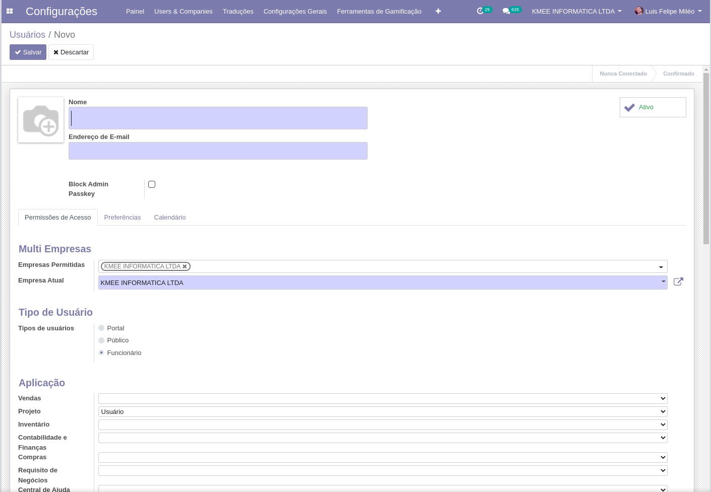
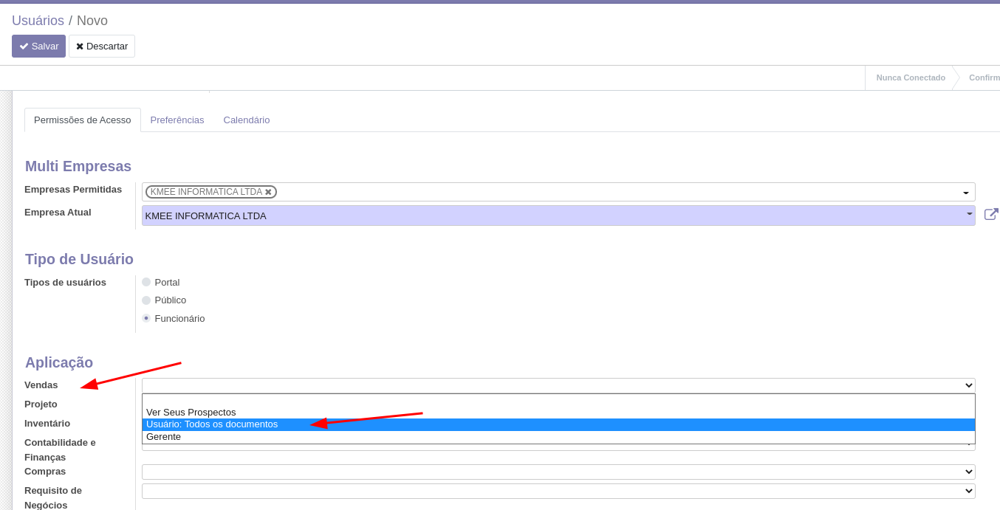

Configurações básicas¶
Usuários¶
Para acessar o cadastro de usuários navegue através:
Menu Principal > Módulo Configurações > Usuários & Empresas > Usuários
{kind=link}
Tipos de usuários:¶
Interno: Com acesso ao Backend;
Portal: Com acesso ao portal;
Público: Com acesso as áreas publicas que precisam de cadastro.
Tip
Depois da versão 12, os usuários de portal e público não podem ser criados por esta interface, somente gerenciados.
Permissões de acesso:¶
Cada módulo tem um conjunto de permissões padrão que podem ser alocadas aos usuários, sendo que as permissões são sempre em nível, e em ordem de menos permissiva para mais permissiva.
{kind=link}
Pois uma permissão de gerente de vendas por exemplo, sempre herdará as permissões definidas nos níveis abaixo.
{kind=link}
Localização¶
Idioma do usuário: Caso queira saber como ativar mais idiomas veja o próximo módulo;
Fuso horário: Todos os dados são salvos no banco de dados em formato UTC e este campo fuso horário é quem define como os dados serão exibidos para o usuário;
Mensagem e Social¶
Neste grupo temos as configurações do módulo de comunicações:
Gerenciamento de notificações: Se o usuário vai lidar com as mensagens dentro do Odoo ou por email;
Apelido/Alias: Uma conta pode ter um alias de email associado a ela, por exemplo: vendas@kmee.com.br
Status Odoo BOT: Quando o usuário loga pela primeira vez o OdooBot interage com ele, este campo guarda a etapa de iteração em que usuário esta.
Assinatura: A assinatura das mensagens enviadas pelo usuário por e-mail para clientes / fornecedores por exemplo.
Ações:¶
Enviar informações de recuperação de senha: Este botão envia um e-mail para o usuário com um link para que ele redefina a senha, caso sua integração por e-mail não esteja 100% implementada, copie o link do header e envie manualmente.
{kind=link}
Ações > Alterar Senha: Troca a senha atual do usuário por uma nova, não é preciso saber a senha anterior.
Ativo / Inativo: Desabilita o acesso do usuário
Imprimir > Rótulo de usuário: Quando o ponto de venda esta instalado, imprime o código de barras do crachá do usuário.
{kind=link}